BrewDog’s flagship IPA. Layered with new world hops to create an explosion of tropical fruit and an all-out riot of grapefruit, pineapple and lychee before a spiky bitter finish, this is transatlantic fusion running at the fences of lost empires. Nothing will ever be the same again.
Prduct price: £2.50
Product Volume: 330ml
Prduct ABV: 5.6%
Beavertown – Neck Oil Session IPA
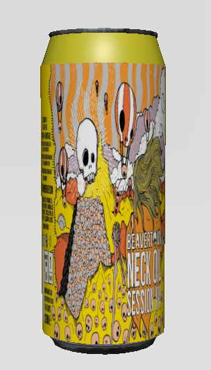£3.00
SCitrusy & fruity IPA that’s light and crisp on the palette another success from Beavertown.
Picture sucking a few of these down in front of the barbecue in a park on a sun-shiny day – that’s this beer’s raison d’etre. Light, crisp and refreshing with punchy notes of citrus peel and light pine, Neck Oil is nicely balanced with slightly sweet biscuity malt throughout, finishing with a medium grapefruit bitterness. And at 4.3%, this is surely one you can sit on all day.
Prduct price: £3.00
Product Volume: 330ml
Prduct ABV: 4.3%
Siren – Soundwave IPA
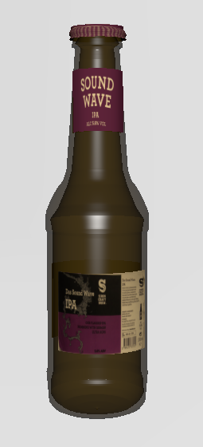£3.50
Dangerously drinkable IPA, tropical fruit sweetness that is perfectly balanced with a bitter element.
The driest of Sirens regulars, Soundwave smacks you about with intense grapefruit, peach and mango hop flavours before leading into a lengthy, dry and resinous finish. The kind of beer you’d wanna suck down while chowing on a tasty salt beef sandwich or a citrusy stir-fry.
Prduct price: £3.50
Product Volume: 330ml
Prduct ABV: 5.6%
Naparbier – Hop Shine New England IPA
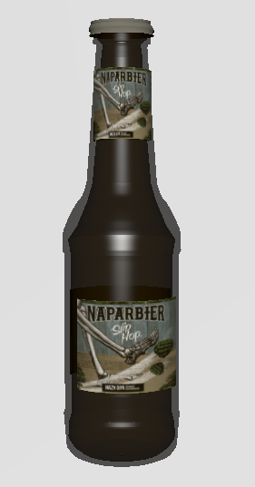£5.50
A good floral/herbal IPA made with love and very tasty.
PA good Hazy IPA from Spain, best had when out and enjoying the sunshine with floral notes and a herbal undertone. One to watch right here!
Prduct price: £5.50
Product Volume: 440ml
Prduct ABV: 6.8%
Magic Rock – Saucery Session IPA
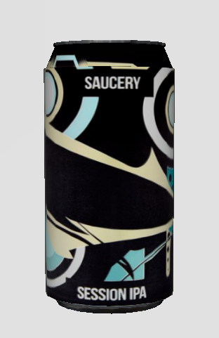£3.50
Proper tasty session beer. The taste of pine lingers afterwards.
From the brewery: A supernatural gluten-free session IPA made for drinking all day long. Lightly sweet and malty Golden Promise™ malt, a balanced bitterness and layers of tropical fruit filled Citra and Ekuanot hops in whirlpool and dry hop. Fermented with London Fog Ale yeast to add fruitier body and enhanced malt and hop profile.
Prduct price: £3.50
Product Volume: 330ml
Prduct ABV: 3.9%
Peroni – Nastro Azzurro
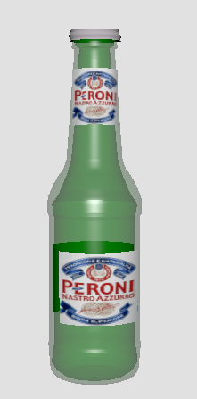£4.00
Crisp and refreshing lager with unmistakable character.
Only ever made and bottled in Italy at theiur breweries in Rome, Bari and Padova, Peroni Nastro Azzurro is brewed using the creativity and flair of Italians. Blending the finest hops with two-row spring planted barley and a quarter of Italian maize results in a beer with a uniquely crisp and refreshing taste. Brewed in Italy since 1963, a delicate balance of bitterness and citrus aromatic notes with a crisp, dry finish.
Prduct price: £4.00
Product Volume: 620ml
Prduct ABV: 5.1%
Heineken Lager
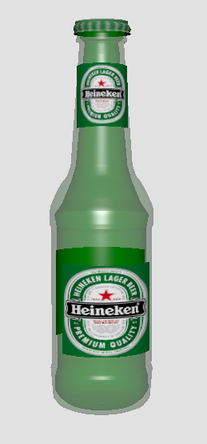£3.00
That classic Heineken taste you know and love.
You know it, you love it, it’s that classic green bottle of Heineken perfection. A great beer to be enjoyed at any time of year. Grab one today and add another green bottle to your collection.
Prduct price: £3.00
Product Volume: 650ml
Prduct ABV: 5.0%
Kronenbourg – 1664
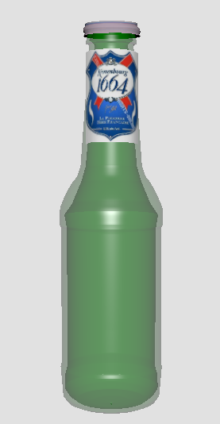£4.50
Light clean grapefruit and hint of candy fruit.
Kronenbourg 1664's pleasure is in its light lemon and herbal flavours from the Alsace hops, and clean bittersweet finish. Kronenbourg 1664 is a Premium Lager at 5.0%. It is brewed with the aromatic Strisselspalt hop from Alsace, which gives it a unique aroma and satisfying taste. All of which makes it the superior tasting premium lager. Kronenbourg 1664 is a full bodied, golden, bittersweet lager with a distinct citrus hop flavour. A Taste Supreme.
Prduct price: £4.50
Product Volume: 660ml
Prduct ABV: 5.0%
Brooklyn Lager
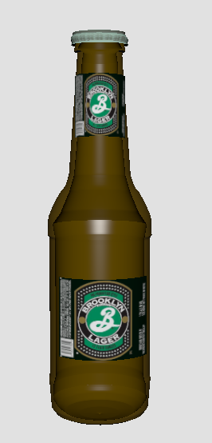£4.00
Unites traditional flavors of toffee, toast, caramel and a dry-hopped aroma full of grapefruit, flowers and pine.
Brooklyn Lager is amber-gold in colour and displays a firm malt centre supported by a refreshing bitterness and floral hop aroma, with caramel malts in the finish. The aromatic qualities of the beer are enhanced by “dry-hopping”, the centuries-old practice of steeping the beer with fresh hops as it undergoes a long, cold maturation. In the late 1800's Brooklyn was one of the largest brewing centres in the country, home to more than 45 breweries.
Prduct price: £4.00
Product Volume: 660ml
Prduct ABV: 5.2%
Sol Lager
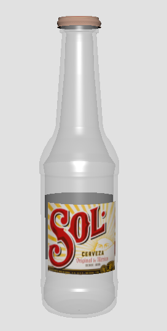£3.50
A classic Mexican light beer that’s good for parties and food.
Sol is the authentic Mexican beer, born in 1899 in Orizba, near the highest point in Mexico. The original brewer discovered a refreshing and light recipe that is still used to this day. Rays of sunlight peeped through the breweries roof onto the transparent bottle inspiring the name Sol, in honour of the sun. Sol uses special light resistant hops that preserve the refreshing taste even on the sunniest of days.
Prduct price: £3.50
Product Volume: 650ml
Prduct ABV: 4.2%
Wiper and True – Milk Shake Stout
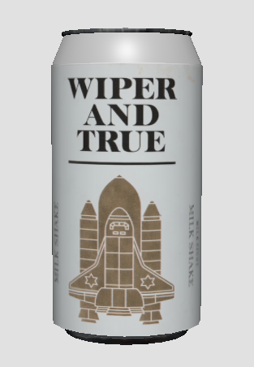£2.50
A rich & creamy stout with great flavour.
Copious chocolate malts laced with vanilla to create a luxurious, milkshake-rich dark beer.
Prduct price: £2.50
Product Volume: 330ml
Prduct ABV: 5.6%
O Brother – The Nightcrawler Milk Stout
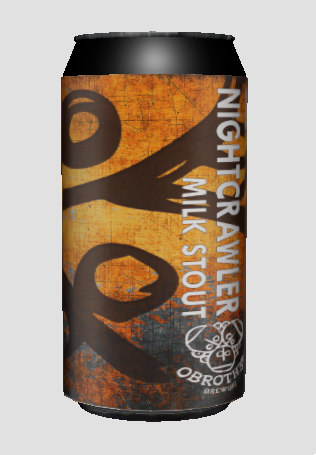£3.50
Straight and simple good milk stout. Give it a go!
As with their session IPA it is solid as hell and gives you everything you want from the style but with an absolute drink ability. You could quite easily drink four or five of these in a row. This Stout is lovingly brewed by the fantastic O Brother.
Prduct price: £3.50
Product Volume: 330ml
Prduct ABV: 4.8%
Cloudwater & Rock Leopard – Step Up English Stout
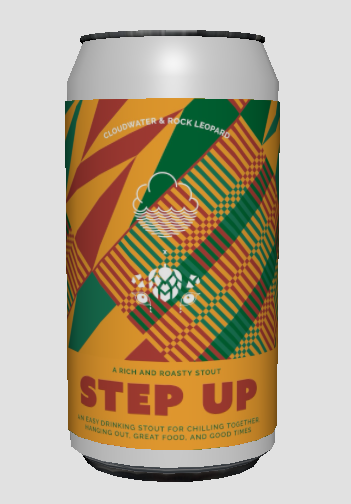£4.00
A new take on Stout for a good cause.
Hold on a second! It’s 2020 and we’re not here to talk diversity, we’re here to make a difference. Step Up is a delicious beer that is gonna help change who the beer industry represents, and what it needs to be. With 5% of the proceeds donated to charities and causes that help those facing society’s biggest hurdles, and the remaining proceeds split 50/50 between Rock Leopard and Cloudwater, every can and every glass helps us make a difference.
Prduct price: £4.00
Product Volume: 330ml
Prduct ABV: 5.0%
Siren – Sins Forbidden Apple Stout
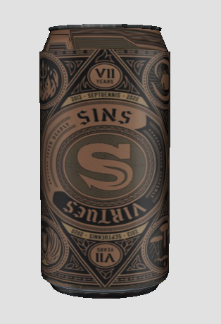£3.00
Cider meets beer in a stout? Strange but devilishly enjoyable.
This 7th Anniversary Celebration takes inspiration from the seven deadly sins. Using some artistic license and 1000l of Apple Juice, ‘Sins’ is a beer/cider hybrid, a style sometimes referred to as a Graf. Even more unusually, we’ve taken this concept into a robust stout recipe!
Prduct price: £3.00
Product Volume: 330ml
Prduct ABV: 6.66%
Barrier – Morticia Oak Aged Imperial Stout
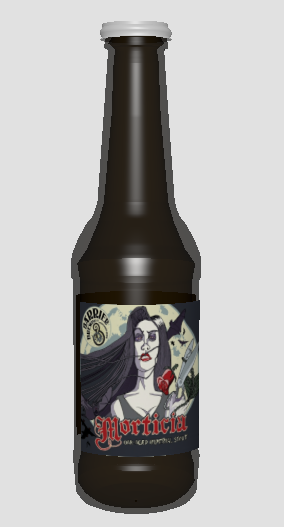£9.00
A beautiful smooth dark stout with lovely balance.
Morticia is generally aged in oak. Morticia is the end. Once experienced, other beer is bland and insipid. Black as a moonless night, her aroma tempting, her strength deceptively powerful. She is unrestrained at youth and learns mercy only with time. Morticia overpowers the senses, then warms the soul. Nursing each sip, you will be transformed. And as you reach the height of her enchantment, the pinnacle of ecstasy; she will break your neck and eat you.
Prduct price: £9.00
Product Volume: 473ml
Prduct ABV: 10.1%
Beavertown – Gamma Ray Pale Ale

£3.00
Crisp and clean, classic American pale ale.
The concept was to create a juicy tropical beer. A brew you can sit on and drink all day, rammed with juicy malts and huge tropical aromas of mango and grapefruit. Massive additions of whole leaf American hops are added in ever increasing numbers at the end of the boil giving huge hop flavour. The beer is then dry hopped for days, driving the punchy aromas so you can smell it from miles away!
Prduct price: £3.00
Product Volume: 330ml
Prduct ABV: 5.4%